Results
Comparisons, novel views, and the recursive construction behind them.
The selected example
From other cameras
Reconstructing the whole and the details
Reference images and delivered scenes, with close-ups of their parts. Open any figure to inspect it at full size.
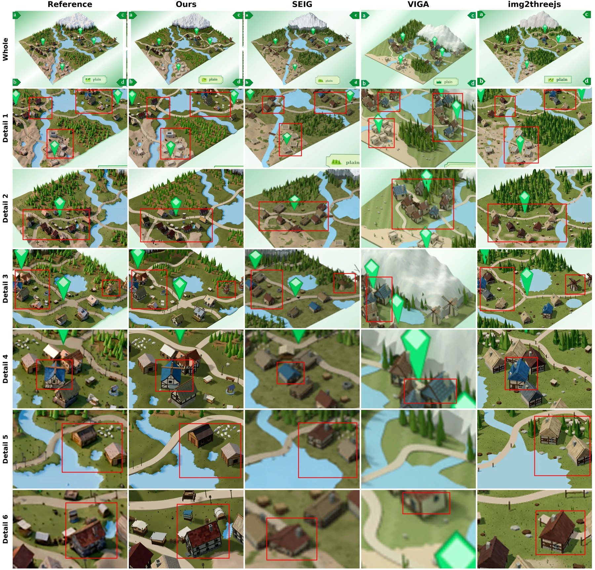

More reconstructed worlds
Each sheet pairs the reference with our reconstruction, from the whole scene to close-up details.
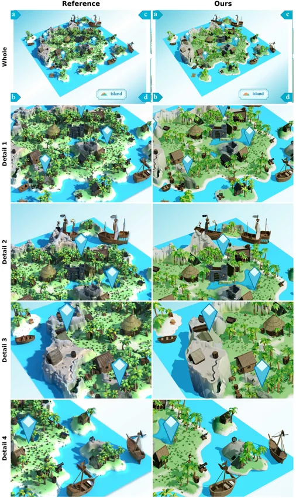
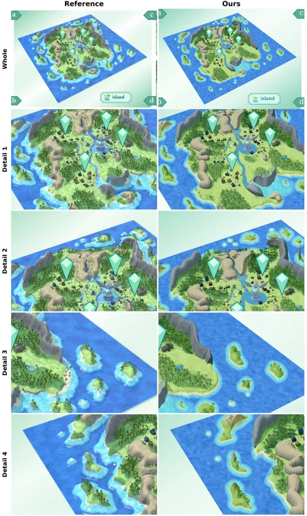
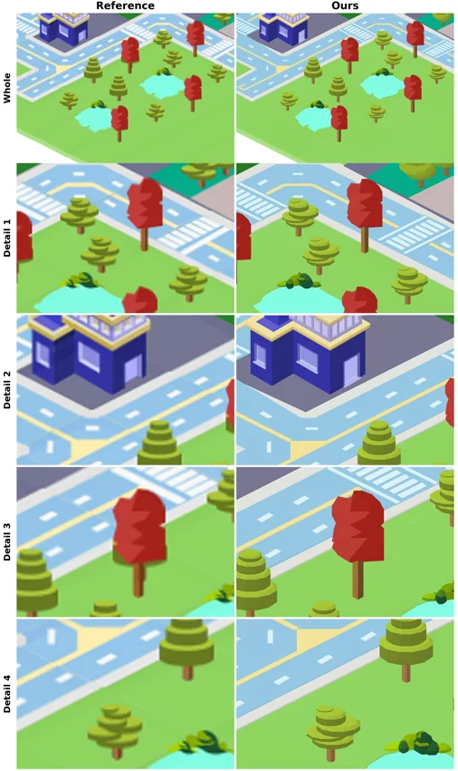
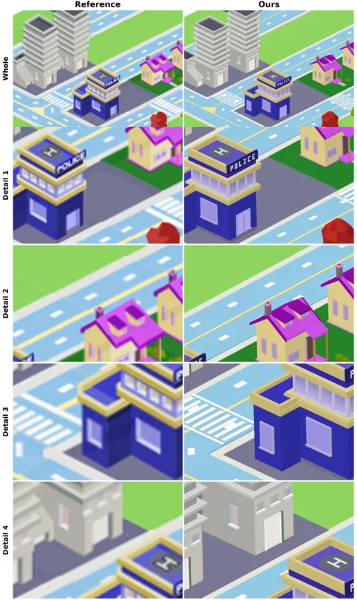
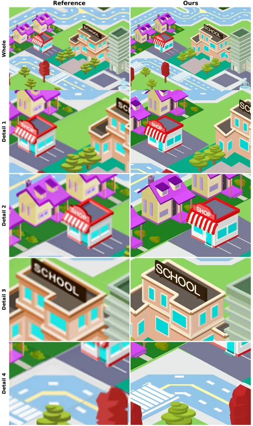
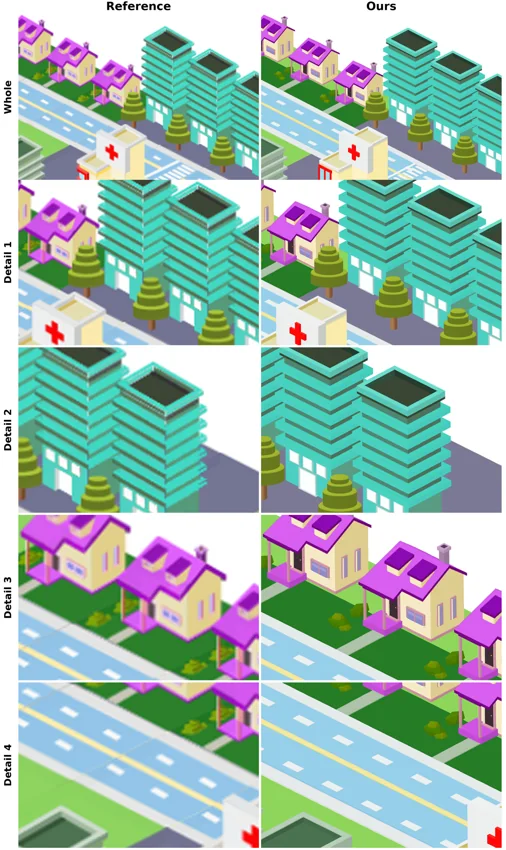
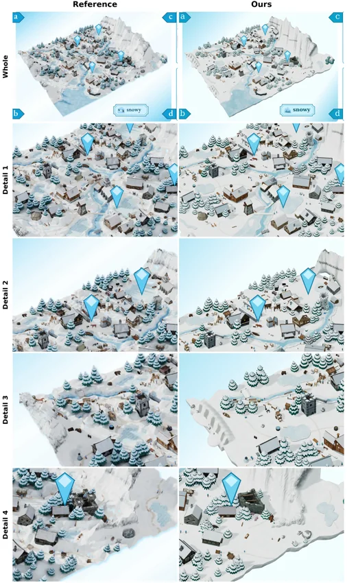
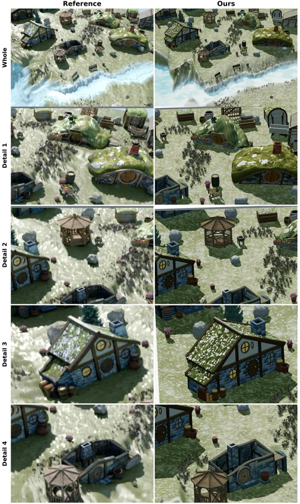
Beyond the reference view
The delivered scene programs can be rendered from new cameras.
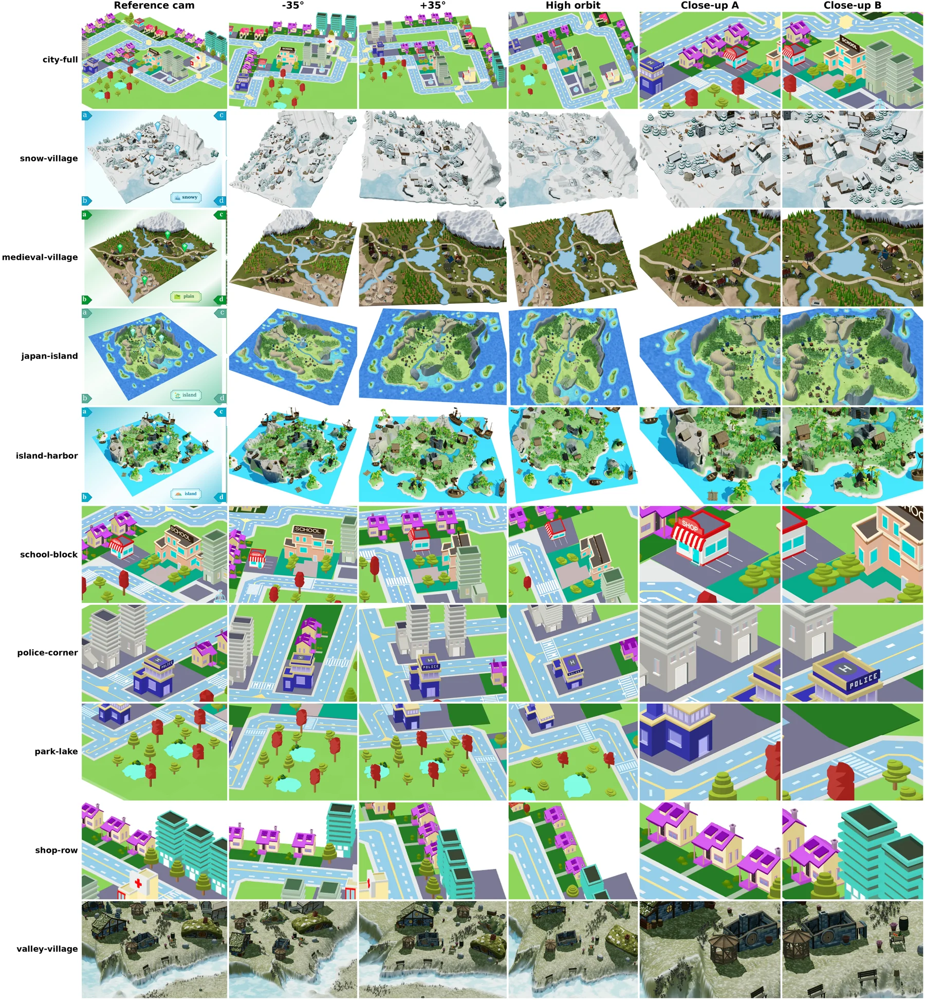
Quantitative comparisons
Scroll sideways to see all metrics →
| Scene | Method | PSNR↑ | SSIM↑ | Edge F1↑ | LPIPS↓ | CLIP↑ |
|---|---|---|---|---|---|---|
| city-full | Ours | 18.2 | 0.66 | 0.94 | 0.158 | 0.95 |
| SEIG | 14.5 | 0.51 | 0.83 | 0.339 | 0.90 | |
| VIGA | 9.5 | 0.48 | 0.58 | 0.670 | 0.83 | |
| img2threejs | 15.5 | 0.55 | 0.91 | 0.243 | 0.93 | |
| snow-village | Ours | 17.9 | 0.73 | 0.85 | 0.237 | 0.83 |
| SEIG | 13.4 | 0.64 | 0.37 | 0.520 | 0.77 | |
| VIGA | 13.5 | 0.61 | 0.40 | 0.541 | 0.75 | |
| img2threejs | 15.4 | 0.64 | 0.65 | 0.351 | 0.81 | |
| island-harbor | Ours | 17.4 | 0.74 | 0.90 | 0.186 | 0.93 |
| SEIG | 11.7 | 0.63 | 0.57 | 0.516 | 0.80 | |
| VIGA | 10.6 | 0.65 | 0.48 | 0.526 | 0.83 | |
| img2threejs | 15.0 | 0.68 | 0.81 | 0.272 | 0.91 | |
| medieval-village | Ours | 18.7 | 0.71 | 0.89 | 0.200 | 0.93 |
| SEIG | 10.9 | 0.60 | 0.50 | 0.541 | 0.85 | |
| VIGA | 10.5 | 0.58 | 0.37 | 0.601 | 0.83 | |
| img2threejs | 15.4 | 0.62 | 0.77 | 0.325 | 0.89 | |
| japan-island | Ours | 19.3 | 0.73 | 0.87 | 0.201 | 0.96 |
| SEIG | 13.3 | 0.64 | 0.47 | 0.513 | 0.93 | |
| VIGA | 12.9 | 0.65 | 0.43 | 0.534 | 0.80 | |
| img2threejs | 16.6 | 0.66 | 0.76 | 0.302 | 0.95 | |
| school-block | Ours | 16.4 | 0.56 | 0.97 | 0.171 | 0.94 |
| SEIG | 11.8 | 0.23 | 0.80 | 0.448 | 0.88 | |
| VIGA | 11.2 | 0.19 | 0.77 | 0.587 | 0.85 | |
| img2threejs | 12.8 | 0.26 | 0.88 | 0.310 | 0.91 | |
| police-corner | Ours | 16.6 | 0.44 | 0.97 | 0.159 | 0.91 |
| SEIG | 12.7 | 0.24 | 0.75 | 0.415 | 0.90 | |
| VIGA | 12.4 | 0.27 | 0.82 | 0.473 | 0.91 | |
| img2threejs | 13.7 | 0.30 | 0.86 | 0.285 | 0.90 | |
| park-lake | Ours | 23.3 | 0.83 | 0.99 | 0.075 | 0.95 |
| SEIG | 12.3 | 0.48 | 0.61 | 0.490 | 0.90 | |
| VIGA | 15.1 | 0.54 | 0.74 | 0.330 | 0.92 | |
| img2threejs | 18.4 | 0.66 | 0.92 | 0.169 | 0.93 | |
| shop-row | Ours | 17.4 | 0.65 | 0.96 | 0.120 | 0.96 |
| SEIG | 12.5 | 0.50 | 0.79 | 0.400 | 0.89 | |
| VIGA | 15.2 | 0.54 | 0.91 | 0.249 | 0.91 | |
| img2threejs | 16.9 | 0.59 | 0.94 | 0.145 | 0.95 | |
| valley-village | Ours | 14.1 | 0.38 | 0.48 | 0.583 | 0.87 |
| SEIG | 9.7 | 0.39 | 0.22 | 0.742 | 0.64 | |
| VIGA | 10.2 | 0.41 | 0.20 | 0.743 | 0.68 | |
| img2threejs | 11.3 | 0.34 | 0.41 | 0.726 | 0.70 |
A recursive construction process
Establish the whole, reconstruct unresolved parts, then revisit their composition. The same solver repeats this process at each level.
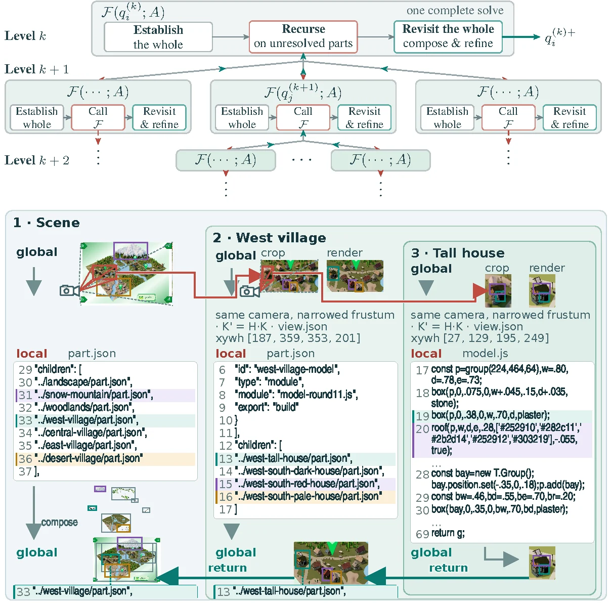
Recursion trees across scenes
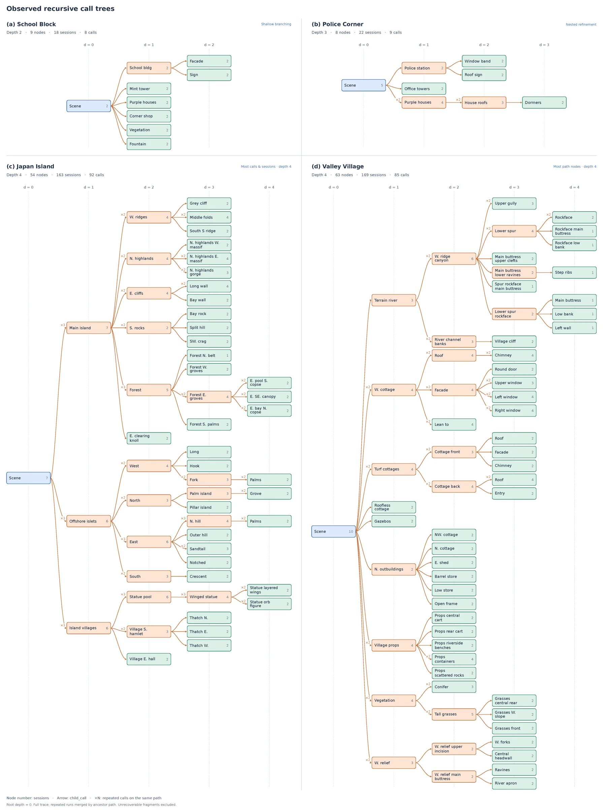